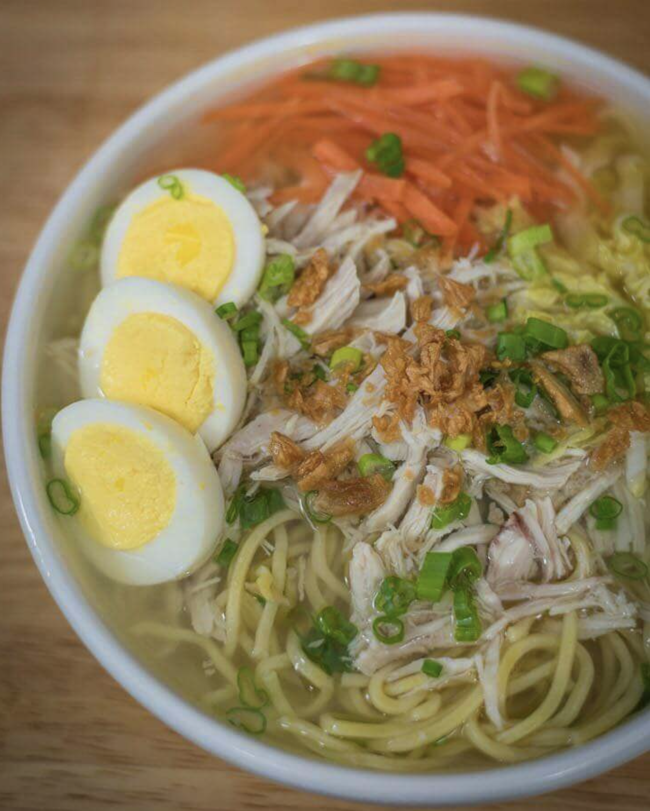

Filipino Chicken Mami

Description
This is a recipe for Filipino chicken noodle soup, popularly known as Chicken Mami.
Ingredients
- 1 lb. chicken breasts
- 1 piece carrot peeled
- 1/2 piece Napa cabbage
- 1 bunch scallions
- 1 lb egg noodles
- 1/4 cup toasted garlic
- 4 pieces hard boiled egg sliced
- 4 cups of chicken broth
- 4 cups of water
- 2 teaspoons salt
Steps
- Combine chicken broth and water in cooking pot to boil.
- Add salt and chicken breats. Cover and boil on low-medium heat for 30 minutes
- Remove the chicken and let it cool down and save the broth used for boiling
- Slice the carrot thinly, chop the napa cabbage and chop the scallions
- Prepare the fresh noodles by boiling 4 cups of water and cook the noodles in boiling water for 2-3 minutes
- Remove the noodles from pot and place noodles onto a serving bowl
- Top the noodles in the bowl with shredded chicken, julienne carrot, chopped cabbage, and slices of boiled eggs
- Pour hot broth into the bowl and sprinkle with scallions and roasted or toasted garlic
- Serve with a condiment composed of your choice of lime juice or fish sauce for flavor